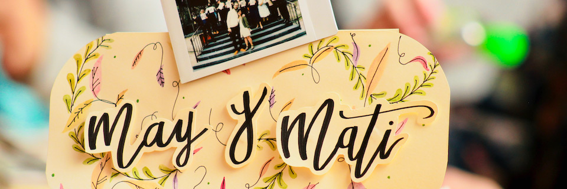

Intro

Hay quienes, al mezclar las cosas, ya conocen o al menos presumen un resultado más o menos exacto. Magos, alquimistas, prestidigitadores, expertos de la ciencia y demás sabios tienen en común todo esto. Ese no es nuestro caso. El 17 de junio de 2021 May y Mati unimos nuestros caminos y empezamos a avanzar como una misma familia. Fue en medio de una pandemia, y no todas las personas que querían y que queríamos pudieron estar allí para vernos dar ese paso. No sabíamos qué nos esperaba, no entendíamos cómo ibamos a lograrlo, solamente sabíamos que queríamos recibir juntxs el porvenir.
El 17 de diciembre de 2023 se cumplen dos años y medio del momento que institucionalizamos nuestra unión. Día en que elegimos avanzar decididamente y sin mapa para descubrir cosas pero, más que nada, inventarlas. Y como inventar es unir, mezclar, y luego ver qué sucede, queremos que nos acompañen a este festejo inventado: nuestra Boda 2.5.
Hemos invitado a nuestras familias, la argentina y la tabasqueña, a juntarse. A conocernos, a conocerse, y a ver qué tienen en común el pejelagarto y el sábalo, el yacaré y los lagartos, la marimba y la cumbia santafesina.
Si te hemos hecho llegar esta dirección es porque queremos que nos acompañes en esta aventura. Habrá playa, taquitos y mucha alegría.
En esta página queremos responder todas tus dudas y que te animes a acompañarnos.
Cómo

Haremos una taquiza con el pretexto de que cumplimos 2.5 años de casados. Un punto intermedio que no suele festejarse pero que está entre las bodas de algodón (2 años) y las de cuero (3 años). Creeemos que se les puede llamar las bodas de imitación cuero o de simil-cuero, interpretando cuidadosamente la nomenclatura existente e internacionalmente homologada que regula los nombres de los aniversarios de casados.
Será una reunión relajada, en la que el objetivo principal es estar a gusto y pasarla bien. Tendremos dos horas de barra libre y taquitos para ustedes. Como manda la tradición en las bodas de simil-cuero, los taquitos y la barra libre marcan el comienzo del festejo. Lo que sigua a continuación nos tocará inventarlo con ustedes, a cuenta y obra de cada quien.
Código de vestimenta. Es la playa y hay calor, elija su vestuario para su mayor confort y comodidad; el glamour es algo meramente opcional.
Cuándo
Domingo 17 de diciembre de 2023.
Nuestro festejo será un domingo. El mismo día en que se cumplen dos años y medio del día en que nos casamos; ¿destino? ¿diseño divino del calendario? ¿casualidad? Aún no hay consenso al respecto. De todas formas, el domingo está muy bien para festejar.
Como es domingo, y es el último día de descanso, la cita es temprano. Por si cualquiera de ustedes tiene que despedirse antes de que caiga el sol para regresar el lunes a trabajar, o al menos intentarlo.
Hora: 1 PM.
Dónde

Nuestra celebración taquiza-bodas-simil-cuero se realizará en la zona centro de Tulum. Lo hemos hecho así para que puedan hospedarse cerca del evento. Tulum tiene buena y variada oferta de alojamientos dentro el pueblo —no hay glamping, deberemos vivir sin carpas de glamour exótico por unos días— y tienen buenas opciones de las cuales elegir lo que mejor le acomode.
La dirección de la cita es Calle 12 Sur 22, La Veleta, 77760 Tulum, Q.R..
RSVP
Nues
Confirma
Confirma aquí:
RSVP